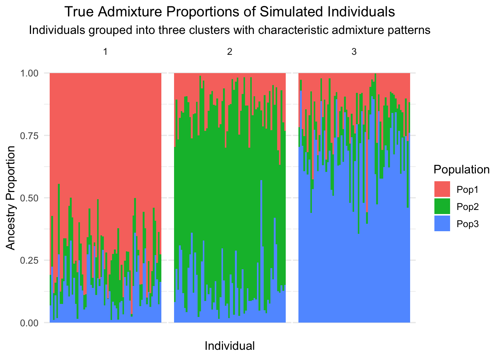

A Practical Primer on Bayesian Statistics for Population Genomics
Author
Sarah Urbut
Code
# Load necessary packageslibrary(tidyverse)library(ggplot2)library(reshape2)library(viridis)library(gtools) # For Dirichlet distributionlibrary(bayesplot) # For nice Bayesian plots# Set a clean theme for all plotstheme_set(theme_minimal(base_size =12) +theme(plot.title =element_text(hjust =0.5),plot.subtitle =element_text(hjust =0.5)))# Set seed for reproducibilityset.seed(42)
Introduction to Bayesian Thinking
Why Bayesian for Population Genomics?
Population genomics presents unique analytical challenges:
Complex data structures with correlations across loci and populations
Multiple testing across thousands or millions of genetic variants
Varying signal strength with most variants having little to no effect
Rich prior knowledge from evolutionary theory and previous studies
Need for interpretable results to guide biological understanding
Bayesian statistics offers elegant solutions to these challenges by:
Incorporating prior knowledge formally into analyses
Providing direct probability statements about hypotheses of interest
Handling multiple testing without arbitrary corrections
Allowing for hierarchical modeling of complex biological processes
Supporting decision-making with explicit quantification of uncertainty
The Bayesian Framework
At its core, Bayesian inference is built on Bayes’ theorem:
\[P(H|D) = \frac{P(D|H) \times P(H)}{P(D)}\]
Where: - \(P(H|D)\) is the posterior probability - what we want to know - \(P(D|H)\) is the likelihood - how probable the data is under our hypothesis - \(P(H)\) is the prior probability - what we knew before seeing the data - \(P(D)\) is the evidence - a normalizing constant
In simple terms: \[\text{Posterior} \propto \text{Likelihood} \times \text{Prior}\]
Understanding Through Visualization
Let’s visualize how Bayesian inference works with a simple example:
Code
# Function to plot Beta distributionsplot_beta <-function(alpha, beta, title, color ="blue") { x <-seq(0.001, 0.999, length =1000) y <-dbeta(x, alpha, beta)data.frame(x = x, y = y, Distribution = title) %>%ggplot(aes(x = x, y = y)) +geom_line(color = color, size =1.2) +labs(title = title,x ="Allele Frequency",y ="Density")}# Create data for three distributionsx <-seq(0.001, 0.999, length =1000)prior <-data.frame(x = x, y =dbeta(x, 2, 3), Distribution ="Prior: Beta(2,3)")likelihood <-data.frame(x = x, y =dbeta(x, 7, 3), Distribution ="Likelihood (Data)")posterior <-data.frame(x = x, y =dbeta(x, 9, 6), Distribution ="Posterior: Beta(9,6)")# Combine dataall_distributions <-rbind(prior, likelihood, posterior)# Plot all three distributionsggplot(all_distributions, aes(x = x, y = y, color = Distribution)) +geom_line(size =1.2) +scale_color_manual(values =c("darkgreen", "purple", "red")) +labs(title ="Bayesian Updating of Allele Frequency Estimate",subtitle ="Combining prior knowledge with new data",x ="Allele Frequency", y ="Density") +theme(legend.position ="bottom")
This visualization shows how we start with a prior belief (green), incorporate new data through the likelihood (purple), and arrive at an updated posterior belief (red).
The prior represents what we knew about the allele frequency before our study, perhaps based on evolutionary theory or previous research. The likelihood represents what our new data tells us. The posterior combines both sources of information.
The p-value Fallacy and Bayesian Solutions
The Problem with p-values
Traditional frequentist approaches in genetics rely heavily on p-values, but these have fundamental limitations:
Misinterpretation: p-values are often wrongly interpreted as the probability the null hypothesis is true
Multiple testing: testing thousands of loci requires arbitrary corrections
No incorporation of prior knowledge: each test treats all hypotheses as equally likely a priori
Binary thinking: focuses on arbitrary significance thresholds rather than effect sizes
Let’s simulate a realistic genetics scenario to illustrate these issues:
Code
# Simulation parametersn_loci <-10000# Number of genetic loci testedprop_true <-0.05# Proportion of truly associated locisample_size <-100# Number of samples# Generate true status for each locus (TRUE = has effect, FALSE = null)true_status <-runif(n_loci) < prop_truen_true <-sum(true_status)# Generate effect sizes for true locitrue_effects <-rnorm(n_loci, 0, 0.1)true_effects[true_status] <-rnorm(n_true, 0, 0.5) # Larger effects for true associations# Generate test statistics and p-valuesz_scores <- true_effects +rnorm(n_loci, 0, 1/sqrt(sample_size))p_values <-2*pnorm(-abs(z_scores)) # Two-sided p-values# Plot distribution of p-valuesp_value_df <-data.frame(p_value = p_values,status =ifelse(true_status, "True Association", "Null"))ggplot(p_value_df, aes(x = p_value, fill = status)) +geom_histogram(bins =50, position ="stack", alpha =0.7) +scale_fill_manual(values =c("gray70", "firebrick")) +labs(title ="Distribution of p-values in Genome-wide Testing",subtitle =paste0(n_true, " true associations among ", n_loci, " tests"),x ="p-value", y ="Count", fill ="Locus Status") +theme(legend.position ="bottom")
When we apply a standard significance threshold of p < 0.05:
Code
# Calculate metrics at p < 0.05significant <- p_values <0.05true_positives <-sum(significant & true_status)false_positives <-sum(significant &!true_status)false_negatives <-sum(!significant & true_status)true_negatives <-sum(!significant &!true_status)# Create metrics for displaymetrics_df <-data.frame(Metric =c("Significant Findings", "True Positives", "False Positives", "False Discovery Rate", "Power (Sensitivity)"),Value =c(sum(significant), true_positives, false_positives, false_positives/sum(significant), true_positives/sum(true_status)))# Display as a nice tableknitr::kable(metrics_df, digits =3)
Metric
Value
Significant Findings
0
True Positives
0
False Positives
0
False Discovery Rate
NaN
Power (Sensitivity)
0
The Bayesian Alternative: Posterior Probabilities
Rather than p-values, Bayesian analysis gives us posterior probabilities - the probability of association given the data. Let’s calculate these:
Code
# Function to calculate Bayes Factors from z-scoresz_to_bf <-function(z, prior_width =1) {# Based on the BIC approximationsqrt(1/(prior_width^2+1)) *exp(0.5* z^2* (prior_width^2/(prior_width^2+1)))}# Calculate Bayes Factorsbayes_factors <-z_to_bf(z_scores)# Convert to posterior probabilities with prior probability = prop_truepost_prob <- (bayes_factors * prop_true) / (bayes_factors * prop_true + (1- prop_true))# Create comparison data framecomparison_df <-data.frame(true_status = true_status,p_value = p_values,post_prob = post_prob,z_score = z_scores)# Plot p-values vs posterior probabilitiesggplot(comparison_df, aes(x = p_value, y = post_prob, color = true_status)) +geom_point(alpha =0.5) +scale_x_log10() +# Log scale for p-valuesscale_color_manual(values =c("gray60", "firebrick"), labels =c("Null", "True Association")) +geom_hline(yintercept =0.95, linetype ="dashed", color ="blue") +geom_vline(xintercept =0.05, linetype ="dashed", color ="blue") +labs(title ="p-values vs. Posterior Probabilities of Association",subtitle ="Bayesian approach provides more intuitive measures of evidence",x ="p-value (log scale)", y ="Posterior Probability",color ="True Status") +theme(legend.position ="bottom")
This plot reveals the fundamental difference between p-values and posterior probabilities:
p-values measure the probability of the data (or more extreme) under the null hypothesis
Posterior probabilities measure the probability that a locus is associated given the data
The Bayesian approach directly answers the question we’re actually interested in!
Bayesian Decision Making
Instead of arbitrary thresholds like p < 0.05, we can use decision theory to set optimal thresholds based on the relative costs of false positives and false negatives:
Code
# Define different decision thresholds for posterior probabilitythresholds <-c(0.5, 0.8, 0.9, 0.95, 0.99)# Calculate metrics for each thresholddecision_metrics <-lapply(thresholds, function(thresh) { decisions <- post_prob > thresh tp <-sum(decisions & true_status) fp <-sum(decisions &!true_status) fn <-sum(!decisions & true_status) tn <-sum(!decisions &!true_status)data.frame(Threshold = thresh,Discoveries =sum(decisions),TruePositives = tp,FalsePositives = fp,FDR =ifelse(sum(decisions) >0, fp/sum(decisions), 0),Power = tp/sum(true_status) )})decision_df <-do.call(rbind, decision_metrics)# Plot trade-off between false discovery rate and powerggplot(decision_df, aes(x = FDR, y = Power)) +geom_path(size =1.2, color ="purple") +geom_point(aes(size = Discoveries), color ="purple") +geom_text(aes(label = Threshold), hjust =-0.3, vjust =-0.3) +labs(title ="Trade-off Between False Discovery Rate and Power",subtitle ="Different posterior probability thresholds offer different trade-offs",x ="False Discovery Rate", y ="Power (Sensitivity)",size ="Number of\nDiscoveries") +theme(legend.position ="bottom")
Conjugate Priors: Elegant Bayesian Updating
The Beta-Binomial Model for Allele Frequencies
One of the most useful Bayesian models in population genetics is the Beta-Binomial model:
Prior: Allele frequency follows a Beta(α, β) distribution
Likelihood: Number of observed alleles follows a Binomial(n, p) distribution
Posterior: Updated allele frequency follows a Beta(α + x, β + n - x) distribution
This model has an elegant property called “conjugacy” - the posterior distribution is in the same family as the prior, making calculations simple.
Code
# Create a data frame for our animation showing updating with datamake_beta_frame <-function(prior_alpha, prior_beta, data_vec) { result <-NULL current_alpha <- prior_alpha current_beta <- prior_beta# Start with just the prior df <-data.frame(x =seq(0.001, 0.999, length =500),y =dbeta(seq(0.001, 0.999, length =500), current_alpha, current_beta),step =0,alpha = current_alpha,beta = current_beta,data_point =NA,label =paste0("Prior: Beta(", current_alpha, ",", current_beta, ")") ) result <- df# Add each data point one at a timefor(i inseq_along(data_vec)) {# Update parametersif(data_vec[i] ==1) { current_alpha <- current_alpha +1 } else { current_beta <- current_beta +1 } df <-data.frame(x =seq(0.001, 0.999, length =500),y =dbeta(seq(0.001, 0.999, length =500), current_alpha, current_beta),step = i,alpha = current_alpha,beta = current_beta,data_point = data_vec[i],label =paste0("After ", i, " observations: Beta(", current_alpha, ",", current_beta, ")") ) result <-rbind(result, df) }return(result)}# Generate some data (biased coin flips - like alleles in a population)true_freq <-0.7n_samples <-20data_vec <-rbinom(n_samples, 1, true_freq)# Create our animation data frameanimation_df <-make_beta_frame(1, 1, data_vec)# Function to plot a specific frameplot_frame <-function(step) { subset_df <- animation_df[animation_df$step <= step, ] current_df <- subset_df[subset_df$step == step, ]# Plot the current distribution p <-ggplot(current_df, aes(x = x, y = y)) +geom_line(size =1.5, color ="firebrick") +labs(title = current_df$label[1],subtitle =paste0("Observed data so far: ", paste(data_vec[1:max(1, step)], collapse =", ")),x ="Allele Frequency", y ="Density") +geom_vline(xintercept = true_freq, linetype ="dashed", color ="darkblue") +annotate("text", x = true_freq +0.05, y =max(current_df$y) *0.9, label ="True frequency", color ="darkblue") +xlim(0, 1) +ylim(0, max(animation_df$y) *1.1)return(p)}# For demonstration, show a few framesplot_frame(0) # Prior only
Code
plot_frame(5) # After 5 observations
Code
plot_frame(10) # After 10 observations
Code
plot_frame(20) # After all 20 observations
Dirichlet-Multinomial for Population Structure
For population structure, we can extend this to the Dirichlet-Multinomial model:
Prior: Population proportions follow a Dirichlet distribution
Likelihood: Individual ancestry assignments follow a Multinomial distribution
Posterior: Updated proportions follow a Dirichlet distribution
Code
# Function to plot Dirichlet samples in 2D (for 3 populations)plot_dirichlet_samples <-function(alpha, n_samples =1000, title ="Dirichlet Distribution") { samples <-rdirichlet(n_samples, alpha)# Create a data frame for ggplot df <-data.frame(Pop1 = samples[, 1],Pop2 = samples[, 2],Pop3 = samples[, 3] )# Create a 2D plot (using first two dimensions)# The third dimension is implied since Pop1 + Pop2 + Pop3 = 1 p <-ggplot(df, aes(x = Pop1, y = Pop2)) +geom_point(alpha =0.5, color ="firebrick", size =1) +# Add contour to show the constraint (Pop1 + Pop2 <= 1)geom_abline(intercept =1, slope =-1, linetype ="dashed") +geom_text(aes(x =0.5, y =0.6), label =paste0("Dirichlet", "(", paste(alpha, collapse =","), ")"),size =4) +labs(title = title,x ="Population 1 Proportion", y ="Population 2 Proportion") +coord_equal() +# Equal aspect ratioxlim(0, 1) +ylim(0, 1) +theme_minimal()return(p)}# Visualize different Dirichlet distributionsp1 <-plot_dirichlet_samples(c(1, 1, 1), title ="Uniform on the simplex")p2 <-plot_dirichlet_samples(c(5, 5, 5), title ="Concentrated in center")p3 <-plot_dirichlet_samples(c(0.5, 0.5, 0.5), title ="Concentrated at corners")p4 <-plot_dirichlet_samples(c(10, 2, 2), title ="Favors first population")# Display the plots (requires gridExtra package)gridExtra::grid.arrange(p1, p2, p3, p4, ncol =2)
Mixture Models for Population Structure
The Building Blocks of Mixture Models
Population structure in genetics is often modeled using mixture models:
Components represent different ancestral populations
The mixture model allows us to: - Cluster individuals into populations - Estimate admixture proportions - Infer population-specific allele frequencies
Let’s implement a simple version of this model:
Code
# Simulate data from a mixture of 3 populationsn_loci <-500n_pops <-3n_individuals <-200# Generate distinct allele frequencies for each source populationpop_allele_freqs <-matrix(0, nrow = n_pops, ncol = n_loci)pop_allele_freqs[1,] <-rbeta(n_loci, 1, 5) # Skewed toward low frequenciespop_allele_freqs[2,] <-rbeta(n_loci, 5, 1) # Skewed toward high frequenciespop_allele_freqs[3,] <-rbeta(n_loci, 2, 2) # Centered around 0.5# Visualize the allele frequency distributionspop_freqs_df <-as.data.frame(t(pop_allele_freqs))names(pop_freqs_df) <-paste0("Population_", 1:n_pops)pop_freqs_melt <- reshape2::melt(pop_freqs_df)ggplot(pop_freqs_melt, aes(x = value, fill = variable)) +geom_density(alpha =0.5) +scale_fill_viridis(discrete =TRUE) +labs(title ="Allele Frequency Distributions in Source Populations",subtitle ="Each population has a distinct genetic profile",x ="Allele Frequency", y ="Density",fill ="Population") +theme(legend.position ="bottom")
From Theory to Practice: Generating Admixed Individuals
Let’s generate admixed individuals with ancestry from these three populations:
Code
# Generate admixture proportions for each individual from Dirichlet distribution# Make three clusters with different characteristic admixture patternsn_per_cluster <-floor(n_individuals /3) # Ensure it's an integern_individuals = n_per_cluster *3# Adjust n_individuals to match# Cluster 1: Mostly population 1 with some admixtureadmix_cluster1 <-rdirichlet(n_per_cluster, c(10, 2, 2))# Cluster 2: Mostly population 2 with some admixtureadmix_cluster2 <-rdirichlet(n_per_cluster, c(2, 10, 2))# Cluster 3: Mostly population 3 with some admixtureadmix_cluster3 <-rdirichlet(n_per_cluster, c(2, 2, 10))# Combine all admixture proportionsadmixture_props <-rbind(admix_cluster1, admix_cluster2, admix_cluster3)colnames(admixture_props) <-paste0("Pop", 1:n_pops)# Generate genotypes based on admixture proportionsgenotypes <-matrix(0, nrow = n_individuals, ncol = n_loci)for(i in1:n_individuals) {# For each locus, compute the effective allele frequency as the weighted average effective_freqs <-as.numeric(admixture_props[i,] %*% pop_allele_freqs)# Generate genotype by sampling from Bernoulli with the effective frequency genotypes[i,] <-rbinom(n_loci, 1, effective_freqs)}# Visualize the true admixture proportionsadmix_df <-as.data.frame(admixture_props)admix_df$Individual <-1:n_individualsadmix_df$Cluster <-rep(1:3, each = n_per_cluster)admix_long <-pivot_longer(admix_df, cols =starts_with("Pop"), names_to ="Population", values_to ="Proportion")ggplot(admix_long, aes(x = Individual, y = Proportion, fill = Population)) +geom_col(width =1) +scale_fill_discrete() +facet_grid(. ~ Cluster, scales ="free_x", space ="free_x") +labs(title ="True Admixture Proportions of Simulated Individuals",subtitle ="Individuals grouped into three clusters with characteristic admixture patterns",x ="Individual", y ="Ancestry Proportion") +theme(axis.text.x =element_blank(), panel.spacing =unit(0.1, "lines"),panel.grid.major.x =element_blank(),panel.grid.minor.x =element_blank())

Code
# Generate admixture proportions for each individual from Dirichlet distribution# Make three clusters with different characteristic admixture patternsn_per_cluster <-floor(n_individuals /3) # Ensure it's an integern_individuals = n_per_cluster *3# Adjust n_individuals to match# Cluster 1: Mostly population 1 with some admixtureadmix_cluster1 <-rdirichlet(n_per_cluster, c(10, 2, 2))# Cluster 2: Mostly population 2 with some admixtureadmix_cluster2 <-rdirichlet(n_per_cluster, c(2, 10, 2))# Cluster 3: Mostly population 3 with some admixtureadmix_cluster3 <-rdirichlet(n_per_cluster, c(2, 2, 10))# Combine all admixture proportionsadmixture_props <-rbind(admix_cluster1, admix_cluster2, admix_cluster3)colnames(admixture_props) <-paste0("Pop", 1:n_pops)# Generate genotypes based on admixture proportionsgenotypes <-matrix(0, nrow = n_individuals, ncol = n_loci)for(i in1:n_individuals) {# For each locus, compute the effective allele frequency as the weighted average effective_freqs <-as.numeric(admixture_props[i,] %*% pop_allele_freqs)# Generate genotype by sampling from Bernoulli with the effective frequency genotypes[i,] <-rbinom(n_loci, 1, effective_freqs)}# Visualize the true admixture proportionsadmix_df <-as.data.frame(admixture_props)admix_df$Individual <-1:n_individualsadmix_df$Cluster <-rep(1:3, each = n_per_cluster)admix_long <-pivot_longer(admix_df, cols =starts_with("Pop"), names_to ="Population", values_to ="Proportion")ggplot(admix_long, aes(x = Individual, y = Proportion, fill = Population)) +geom_col(width =1) +scale_fill_discrete() +facet_grid(. ~ Cluster, scales ="free_x", space ="free_x") +labs(title ="True Admixture Proportions of Simulated Individuals",subtitle ="Individuals grouped into three clusters with characteristic admixture patterns",x ="Individual", y ="Ancestry Proportion") +theme(axis.text.x =element_blank(), panel.spacing =unit(0.1, "lines"),panel.grid.major.x =element_blank(),panel.grid.minor.x =element_blank())
PCA Visualization of Population Structure
Before applying a Bayesian mixture model, let’s visualize the population structure using Principal Component Analysis (PCA):
Code
# Perform PCA on the genotype datapca_result <-prcomp(genotypes, center =TRUE, scale. =FALSE)# Create a data frame for plottingpca_df <-data.frame(PC1 = pca_result$x[, 1],PC2 = pca_result$x[, 2],Cluster =as.factor(rep(1:3, each = n_per_cluster)))# Calculate the most dominant ancestry for each individualdominant_pop <-apply(admixture_props, 1, which.max)dominant_pop_names <-paste0("Pop", dominant_pop)# Add this information to the PCA data framepca_df$DominantPop <-as.factor(dominant_pop_names)# Plot PCA colored by clusterggplot(pca_df, aes(x = PC1, y = PC2, color = DominantPop)) +geom_point(size =3, alpha =0.7) +scale_color_viridis_d() +labs(title ="PCA of Simulated Genotype Data",subtitle ="Each point represents an individual colored by their dominant ancestry",x =paste0("PC1 (", round(summary(pca_result)$importance[2, 1] *100, 1), "% variance)"),y =paste0("PC2 (", round(summary(pca_result)$importance[2, 2] *100, 1), "% variance)"),color ="Dominant\nAncestry") +theme(legend.position ="right")
Inferring Population Structure with Bayesian Mixture Models
Now, let’s implement a simplified Bayesian mixture model to infer the population structure from the genotype data alone:
Code
# Function to compute log-likelihood of genotypes given population allele frequenciescompute_log_likelihood <-function(genotypes, pop_freqs) { n_ind <-nrow(genotypes) n_pops <-nrow(pop_freqs) n_loci <-ncol(genotypes)# Initialize log-likelihood matrix log_lik <-matrix(0, nrow = n_ind, ncol = n_pops)for(i in1:n_ind) {for(k in1:n_pops) {# For each locus, compute log-likelihood of genotypefor(j in1:n_loci) { g <- genotypes[i, j] freq <- pop_freqs[k, j]# Add small constant to avoid log(0) epsilon <-1e-10 log_lik[i, k] <- log_lik[i, k] + g *log(freq + epsilon) + (1-g) *log(1- freq + epsilon) } } }return(log_lik)}# Function for Gibbs sampling iterationone_iteration <-function(genotypes, current_pop_freqs, current_admix, alpha) { n_ind <-nrow(genotypes) n_pops <-nrow(current_pop_freqs) n_loci <-ncol(genotypes)# 1. Update admixture proportions using current pop frequencies log_lik <-compute_log_likelihood(genotypes, current_pop_freqs)# Convert to posterior probabilities and add Dirichlet prior new_admix <-matrix(0, nrow = n_ind, ncol = n_pops)for(i in1:n_ind) {# Posterior is proportional to likelihood * prior# For admixture proportions, prior is Dirichlet post_alpha <- alpha +exp(log_lik[i,] -max(log_lik[i,])) new_admix[i,] <-rdirichlet(1, post_alpha) }# 2. Update population allele frequencies using current admixture proportions new_pop_freqs <-matrix(0, nrow = n_pops, ncol = n_loci)for(k in1:n_pops) {for(j in1:n_loci) {# Weighted sum of genotypes, weights are admixture proportions weighted_count <-sum(new_admix[, k] * genotypes[, j]) total_weight <-sum(new_admix[, k])# Beta posterior for allele frequency a <-1+ weighted_count # Beta prior parameters (1,1) + data b <-1+ total_weight - weighted_count# Sample from posterior new_pop_freqs[k, j] <-rbeta(1, a, b) } }return(list(admix = new_admix, pop_freqs = new_pop_freqs))}# Initialize parametersn_iter <-30pop_freqs <-matrix(runif(n_pops * n_loci), nrow = n_pops, ncol = n_loci)admix <-matrix(1/n_pops, nrow = n_individuals, ncol = n_pops)alpha <-rep(1, n_pops)# Store results from each iterationresults <-list()results[[1]] <-list(pop_freqs = pop_freqs,admix = admix)# Run Gibbs samplingfor(iter in2:n_iter) { update <-one_iteration(genotypes, pop_freqs, admix, alpha) admix <- update$admix pop_freqs <- update$pop_freqs results[[iter]] <-list(pop_freqs = pop_freqs,admix = admix )if(iter %%5==0) {cat("Completed iteration", iter, "\n") }}
Let’s visualize how our inference improves with each iteration:
Code
# Track how inferred admixture proportions change with iterations# For visualization, just look at a few selected individualsselected_inds <-c(1, 70, 140) # One from each cluster# Extract data for these individuals across iterationsadmix_tracking <-data.frame()for(iter in1:n_iter) {for(ind in selected_inds) { admix_tracking <-rbind(admix_tracking, data.frame(Iteration = iter,Individual = ind,Population =factor(paste0("Pop", 1:n_pops)),TrueProportion = admixture_props[ind, ],InferredProportion = results[[iter]]$admix[ind, ] )) }}# Plot the convergenceggplot(admix_tracking, aes(x = Iteration, y = InferredProportion, color = Population)) +geom_line(size =1) +geom_hline(aes(yintercept = TrueProportion, color = Population), linetype ="dashed", alpha =0.7) +facet_wrap(~ Individual, nrow =3) +scale_color_viridis_d() +labs(title ="Convergence of Inferred Admixture Proportions",subtitle ="Dashed lines show true values, solid lines show inferred values",x ="MCMC Iteration", y ="Admixture Proportion") +theme(legend.position ="bottom")
Now, let’s compare our inferred admixture proportions with the true values:
Code
# Extract final admixture estimatesinferred_admix <- results[[n_iter]]$admixinferred_pop_freqs <- results[[n_iter]]$pop_freqs# There's a label switching issue in MCMC - reorder populations to match truth# For simplicity, we'll just look at the correlation structurecor_mat <-cor(inferred_admix, admixture_props)best_match <-apply(cor_mat, 1, which.max)# Reorder inferred admixture based on matchingreordered_admix <- inferred_admix[, best_match]colnames(reordered_admix) <-colnames(admixture_props)# Create comparison dataadmix_comparison <-data.frame(Individual =rep(1:n_individuals, times =2),Type =rep(c("True", "Inferred"), each = n_individuals),Cluster =rep(rep(1:3, each = n_per_cluster), times =2))# Add population proportionsfor(i in1:n_pops) { admix_comparison[[paste0("Pop", i)]] <-c( admixture_props[, i], # True values reordered_admix[, i] # Inferred values )}# Reshape for plottingadmix_long <-pivot_longer( admix_comparison, cols =starts_with("Pop"), names_to ="Population", values_to ="Proportion")# Plot comparisonggplot(admix_long, aes(x = Individual, y = Proportion, fill = Population)) +geom_col(width =1) +facet_grid(Type ~ Cluster, scales ="free_x", space ="free_x",labeller =labeller(Type =c("True"="True Admixture", "Inferred"="Inferred Admixture"))) +scale_fill_viridis_d() +labs(title ="True vs. Inferred Admixture Proportions",subtitle ="Bayesian mixture model successfully recovers the population structure",x ="Individual", y ="Ancestry Proportion") +theme(axis.text.x =element_blank(),panel.spacing =unit(0.1, "lines"),panel.grid.major.x =element_blank(),panel.grid.minor.x =element_blank())
Allele Frequency Inference
Let’s also compare the true and inferred population-specific allele frequencies:
Code
# Reorder inferred allele frequencies based on matchingreordered_pop_freqs <- inferred_pop_freqs[best_match, ]rownames(reordered_pop_freqs) <-paste0("Pop", 1:n_pops)# Create comparison data frame - use only a subset of loci for clarityn_loci_to_plot <-100loci_to_plot <-sample(1:n_loci, n_loci_to_plot)freq_comparison <-data.frame()for(pop in1:n_pops) { pop_name <-paste0("Pop", pop) freq_comparison <-rbind(freq_comparison, data.frame(Population = pop_name,Locus =rep(loci_to_plot, times =2),Type =rep(c("True", "Inferred"), each =length(loci_to_plot)),Frequency =c( pop_allele_freqs[pop, loci_to_plot], reordered_pop_freqs[pop, loci_to_plot] ) ))}# Plot the comparison as a scatter plotggplot(freq_comparison, aes(x = Locus, y = Frequency, color = Type, shape = Type)) +geom_point(alpha =0.7) +facet_wrap(~ Population, ncol =1) +scale_color_manual(values =c("True"="darkblue", "Inferred"="firebrick")) +labs(title ="True vs. Inferred Population-Specific Allele Frequencies",subtitle ="Showing a random sample of 100 loci",x ="Locus Index", y ="Allele Frequency") +theme(axis.text.x =element_blank(),legend.position ="bottom")
Let’s also create a direct comparison plot to see how well we’ve recovered the true frequencies:
Code
# Create data for scatter plotscatter_data <-data.frame()for(pop in1:n_pops) { scatter_data <-rbind(scatter_data, data.frame(Population =paste0("Pop", pop),True = pop_allele_freqs[pop, ],Inferred = reordered_pop_freqs[pop, ] ))}# Plotggplot(scatter_data, aes(x = True, y = Inferred)) +geom_point(alpha =0.3, color ="firebrick") +geom_abline(intercept =0, slope =1, linetype ="dashed") +facet_wrap(~ Population) +labs(title ="True vs. Inferred Allele Frequencies",subtitle ="Points along diagonal indicate perfect recovery",x ="True Frequency", y ="Inferred Frequency") +theme_minimal()
Clinical Trials and Non-Informative Priors
The Role of Flat Priors in Clinical Evidence
Clinical trials provide an excellent framework for understanding how Bayesian methods can be applied in practice, especially regarding the choice of priors. When analyzing clinical trial data, researchers often use non-informative (flat) priors to let the data “speak for itself.”
Let’s simulate a clinical trial for a new genetic treatment and analyze it using a Bayesian approach with a flat prior:
Calculating the Posterior Probability of Superiority
Rather than relying on p-values, Bayesian analysis allows us to directly calculate the probability that the treatment is superior to control:
Code
# Monte Carlo estimation of P(treatment > control)n_samples <-100000control_samples <-rbeta(n_samples, post_alpha_control, post_beta_control)treatment_samples <-rbeta(n_samples, post_alpha_treatment, post_beta_treatment)# Calculate the probability that treatment is better than controlprob_superiority <-mean(treatment_samples > control_samples)# Calculate the distribution of differencesdiff_samples <- treatment_samples - control_samples# Create a data frame for the difference distributiondiff_df <-data.frame(difference = diff_samples)# Plot the distribution of differencesggplot(diff_df, aes(x = difference)) +geom_histogram(bins =50, fill ="purple", alpha =0.7) +geom_vline(xintercept =0, linetype ="dashed", color ="black") +geom_vline(xintercept =quantile(diff_samples, c(0.025, 0.975)), linetype ="dotted", color ="red") +annotate("text", x =quantile(diff_samples, 0.025) -0.02, y = n_samples/30, label ="2.5%", color ="red", angle =90) +annotate("text", x =quantile(diff_samples, 0.975) +0.02, y = n_samples/30, label ="97.5%", color ="red", angle =90) +annotate("text", x =0.1, y = n_samples/15, label =paste0("P(Treatment > Control) = ", round(prob_superiority*100, 1), "%"),color ="blue") +labs(title ="Posterior Distribution of Treatment Effect",subtitle ="Difference between treatment and control response rates",x ="Treatment Effect (Treatment - Control)", y ="Frequency") +xlim(-0.3, 0.3)
Flat Priors vs. Informative Priors
Now, let’s compare how different priors affect our conclusions:
The Bayesian analysis provides several advantages over the traditional p-value approach:
Direct probability statements: We can state that there is a 99.1% probability that the treatment is superior to control.
Clinical significance: We directly estimate the effect size (median difference of 15.7%) with uncertainty quantified through the credible interval.
Robustness to prior assumptions: As shown above, with sufficient data, different priors lead to similar conclusions.
Decision support: We can make decisions based on the posterior probability of benefit, rather than arbitrary significance thresholds.
This approach mirrors how clinicians actually think about evidence and provides a more intuitive framework for medical decision-making.
Applications to Adaptive Designs in Population Genomics
Learning from Clinical Trials
Bayesian methods used in clinical trials offer valuable insights for population genomics:
Adaptive sampling - Add more samples only where needed
Sequential decision-making - Stop collecting data when evidence is sufficient
Borrowing strength across populations or studies
Balancing false positives and false negatives with decision theory
Let’s implement a simple adaptive design for a genetic association study:
Code
# Simulate a genetic association study with sequential samplingset.seed(456)# Parametersn_loci <-1000true_effect_size <-0.3max_samples <-500interim_points <-seq(100, max_samples, by =100)# Set 5% of loci to have true effectsn_causal <-floor(n_loci *0.05)causal_loci <-sample(1:n_loci, n_causal)# Simulate genotypes for all potential samplesminor_allele_freq <-0.3genotypes <-matrix(rbinom(n_loci * max_samples, 2, minor_allele_freq), nrow = max_samples, ncol = n_loci)# Generate phenotypestrue_effects <-rep(0, n_loci)true_effects[causal_loci] <- true_effect_sizephenotypes <- genotypes %*% true_effects +rnorm(max_samples)# Function to calculate Bayes Factors for each locuscalculate_bf <-function(geno, pheno) { n_loci <-ncol(geno) bayes_factors <-numeric(n_loci)# Fit models for each locusfor(j in1:n_loci) {# Fit null model (intercept only) null_model <-lm(pheno ~1) null_ss_residual <-sum(null_model$residuals^2)# Fit alternative model (with genotype) alt_model <-lm(pheno ~ geno[, j]) alt_ss_residual <-sum(alt_model$residuals^2)# Calculate Bayes Factor using BIC approximation n <-length(pheno) bic_diff <- n *log(null_ss_residual / alt_ss_residual) bayes_factors[j] <-exp(0.5* bic_diff) }return(bayes_factors)}# Calculate posterior probabilitiescalculate_posteriors <-function(bf, prior =0.05) { (bf * prior) / (bf * prior + (1- prior))}# Track results at each interim analysisinterim_results <-list()for(n in interim_points) {# Use data up to sample size n current_genotypes <- genotypes[1:n, ] current_phenotypes <- phenotypes[1:n]# Calculate Bayes Factors and posteriors bf <-calculate_bf(current_genotypes, current_phenotypes) post_prob <-calculate_posteriors(bf)# Store results interim_results[[as.character(n)]] <-list(sample_size = n,bf = bf,post_prob = post_prob,discoveries_50 =sum(post_prob >0.5),discoveries_80 =sum(post_prob >0.8),discoveries_95 =sum(post_prob >0.95),true_positives_95 =sum(post_prob[causal_loci] >0.95),false_positives_95 =sum(post_prob[-causal_loci] >0.95) )}# Create a summary data frameinterim_summary <-data.frame(SampleSize =as.numeric(names(interim_results)),Discoveries_50 =sapply(interim_results, function(x) x$discoveries_50),Discoveries_80 =sapply(interim_results, function(x) x$discoveries_80),Discoveries_95 =sapply(interim_results, function(x) x$discoveries_95),TruePositives_95 =sapply(interim_results, function(x) x$true_positives_95),FalsePositives_95 =sapply(interim_results, function(x) x$false_positives_95))interim_summary$FDR_95 <- interim_summary$FalsePositives_95 / interim_summary$Discoveries_95interim_summary$Power_95 <- interim_summary$TruePositives_95 / n_causal# Plot how discoveries evolve with sample sizeinterim_long <-pivot_longer( interim_summary, cols =c(Discoveries_50, Discoveries_80, Discoveries_95),names_to ="Threshold",values_to ="Discoveries")interim_long$Threshold <-factor( interim_long$Threshold,levels =c("Discoveries_50", "Discoveries_80", "Discoveries_95"),labels =c("PP > 0.5", "PP > 0.8", "PP > 0.95"))ggplot(interim_long, aes(x = SampleSize, y = Discoveries, color = Threshold, group = Threshold)) +geom_line(size =1.2) +geom_point(size =3) +scale_color_viridis_d() +labs(title ="Number of Discoveries vs. Sample Size",subtitle ="Results at different posterior probability thresholds",x ="Sample Size", y ="Number of Discoveries") +theme(legend.position ="bottom")
Let’s also look at the trade-off between power and false discovery rate:
Code
# Plot power vs. FDR trade-offggplot(interim_summary, aes(x = FDR_95, y = Power_95)) +geom_path(size =1.2, color ="purple") +geom_point(aes(size = SampleSize), color ="purple") +geom_text(aes(label = SampleSize), hjust =-0.3, vjust =-0.3) +labs(title ="Power vs. False Discovery Rate Trade-off",subtitle ="At posterior probability threshold of 0.95",x ="False Discovery Rate", y ="Power",size ="Sample Size") +theme(legend.position ="bottom")
Decision Theory for Optimal Sample Size
Instead of arbitrarily choosing a sample size, Bayesian decision theory allows us to determine the optimal sample size based on costs and benefits:
Code
# Define costs and benefitscost_per_sample <-1# Cost per additional samplecost_false_positive <-50# Cost of following up a false leadcost_false_negative <-100# Cost of missing a true associationbenefit_true_positive <-200# Benefit of discovering a true association# Calculate expected utility at each sample sizeutility_df <-data.frame(SampleSize = interim_summary$SampleSize,SamplingCost =-interim_summary$SampleSize * cost_per_sample,FalsePositiveCost =-interim_summary$FalsePositives_95 * cost_false_positive,FalseNegativeCost =-(n_causal - interim_summary$TruePositives_95) * cost_false_negative,TruePositiveBenefit = interim_summary$TruePositives_95 * benefit_true_positive)utility_df$TotalUtility <- utility_df$SamplingCost + utility_df$FalsePositiveCost + utility_df$FalseNegativeCost + utility_df$TruePositiveBenefit# Calculate return on investmentutility_df$ROI <- utility_df$TotalUtility / (-utility_df$SamplingCost)# Plot the utility componentsutility_long <-pivot_longer( utility_df, cols =c(SamplingCost, FalsePositiveCost, FalseNegativeCost, TruePositiveBenefit, TotalUtility),names_to ="Component",values_to ="Value")# Order the componentsutility_long$Component <-factor( utility_long$Component,levels =c("SamplingCost", "FalsePositiveCost", "FalseNegativeCost", "TruePositiveBenefit", "TotalUtility"))# Plot utility componentsggplot(utility_long, aes(x = SampleSize, y = Value, color = Component, group = Component)) +geom_line(size =1) +geom_point() +scale_color_manual(values =c("SamplingCost"="red", "FalsePositiveCost"="orange", "FalseNegativeCost"="purple", "TruePositiveBenefit"="green","TotalUtility"="blue"),labels =c("Sampling Cost", "False Positive Cost", "False Negative Cost","True Positive Benefit", "Total Utility") ) +labs(title ="Components of Expected Utility by Sample Size",subtitle ="Optimal sample size maximizes total utility",x ="Sample Size", y ="Utility") +theme(legend.position ="bottom")
Code
# Plot total utility and ROIutility_plot <- utility_long[utility_long$Component =="TotalUtility", ]optimal_n <- utility_df$SampleSize[which.max(utility_df$TotalUtility)]ggplot(utility_df, aes(x = SampleSize)) +geom_line(aes(y = TotalUtility), size =1.2, color ="blue") +geom_point(aes(y = TotalUtility), size =3, color ="blue") +geom_line(aes(y = ROI *1000), size =1.2, color ="darkgreen", linetype ="dashed") +geom_point(aes(y = ROI *1000), size =3, color ="darkgreen") +geom_vline(xintercept = optimal_n, linetype ="dotted", color ="red") +annotate("text", x = optimal_n +20, y =max(utility_df$TotalUtility) *0.5, label =paste("Optimal n =", optimal_n), color ="red") +scale_y_continuous(name ="Total Utility",sec.axis =sec_axis(~./1000, name ="Return on Investment") ) +labs(title ="Total Utility and ROI by Sample Size",subtitle ="Optimal sample size balances costs and benefits") +theme(axis.title.y =element_text(color ="blue"),axis.title.y.right =element_text(color ="darkgreen") )
Multivariate Normal Mixtures and mash
Multivariate Effects and Correlated Traits
Many genetic studies examine effects across multiple traits, tissues, or conditions. The Multivariate Adaptive Shrinkage (mash) method developed by Urbut, Stephens, et al. provides a powerful Bayesian framework for analyzing such data.
Key aspects of mash include:
Multivariate normal likelihood for observed effect estimates
Mixture of multivariate normal priors to capture patterns of effects
Sharing information across related outcomes
Adaptive shrinkage based on patterns in the data
Let’s simulate a simplified version of this approach:
Code
set.seed(789)# Simulation parametersn_variants <-500n_traits <-5n_null <-400# Number of variants with no effectn_shared <-50# Number of variants with shared effects across traitsn_specific <-50# Number of variants with trait-specific effects# Create empty effect size matrix (variants × traits)true_effects <-matrix(0, nrow = n_variants, ncol = n_traits)colnames(true_effects) <-paste0("Trait", 1:n_traits)# Assign effects:# 1. Shared effects (same direction and similar magnitude across traits)shared_idx <-1:n_sharedshared_magnitude <-rnorm(n_shared, mean =0, sd =0.5)true_effects[shared_idx, ] <-matrix(rep(shared_magnitude, each = n_traits), nrow = n_shared)# 2. Trait-specific effectsspecific_idx <- (n_shared +1):(n_shared + n_specific)for(i in1:n_specific) { trait <-sample(1:n_traits, 1) true_effects[n_shared + i, trait] <-rnorm(1, mean =0, sd =0.8)}# Generate observed effect estimates with noisestandard_errors <-matrix(runif(n_variants * n_traits, 0.1, 0.3), nrow = n_variants, ncol = n_traits)observed_effects <- true_effects +matrix(rnorm(n_variants * n_traits), nrow = n_variants) * standard_errors# Calculate correlation structure between traitstrue_cor <-cor(true_effects)obs_cor <-cor(observed_effects)# Visualize correlation structuresplot_corr_matrices <-function(m1, m2, title1, title2) { df1 <- reshape2::melt(m1) df2 <- reshape2::melt(m2) p1 <-ggplot(df1, aes(x = Var1, y = Var2, fill = value)) +geom_tile() +scale_fill_gradient2(low ="blue", high ="red", mid ="white", midpoint =0, limit =c(-1,1), name ="Correlation") +theme_minimal() +labs(title = title1, x ="", y ="") p2 <-ggplot(df2, aes(x = Var1, y = Var2, fill = value)) +geom_tile() +scale_fill_gradient2(low ="blue", high ="red", mid ="white", midpoint =0, limit =c(-1,1), name ="Correlation") +theme_minimal() +labs(title = title2, x ="", y ="") gridExtra::grid.arrange(p1, p2, ncol =2)}plot_corr_matrices(true_cor, obs_cor, "True Correlation Structure", "Observed Correlation Structure")
Implementing a Simplified mash Analysis
The core of mash is to fit a mixture of multivariate normal distributions to capture patterns in the data:
Code
# Function to calculate multivariate normal likelihoodmvn_likelihood <-function(beta, Sigma, mu) { k <-length(mu) dev <- beta - mu quadform <-sum(dev *solve(Sigma, dev))return(exp(-0.5* quadform) /sqrt((2*pi)^k *det(Sigma)))}# Define candidate covariance matrices for our mixture# 1. Identity matrix (independent effects)U_identity <-diag(n_traits)# 2. Rank1 matrix (shared effects)shared_vector <-rep(1, n_traits)U_shared <-outer(shared_vector, shared_vector)# 3. Trait-specific matricesU_traits <-list()for(i in1:n_traits) { U_tissue <-matrix(0, n_traits, n_traits) U_tissue[i, i] <-1 U_traits[[i]] <- U_tissue}# 4. Combine all covariance matricesU_list <-c(list(U_identity, U_shared), U_traits)names(U_list) <-c("Independent", "Shared", paste0("Trait", 1:n_traits))# Scale covariance matrices by an appropriate valueprior_variance <-0.5^2U_list <-lapply(U_list, function(U) U * prior_variance)# For a subset of variants, calculate posterior weights for each componentn_examples <-5example_indices <-c(sample(shared_idx, 2), # 2 shared effect variantssample(specific_idx, 2), # 2 tissue-specific variantssample((n_shared + n_specific +1):n_variants, 1) # 1 null variant)example_results <-list()for(idx in example_indices) { beta <- observed_effects[idx, ] S <-diag(standard_errors[idx, ]^2)# Calculate weight for each covariance matrix using marginal likelihood weights <-sapply(U_list, function(U) { Sigma <- S + Umvn_likelihood(beta, Sigma, rep(0, n_traits)) })# Normalize weights weights <- weights /sum(weights)# Calculate posteriors under each covariance posteriors <-list()for(k in1:length(U_list)) { U <- U_list[[k]] Sigma <- S + U# Posterior variance V <- S - S %*%solve(Sigma) %*% S# Posterior mean mu <- V %*%solve(S) %*% beta posteriors[[k]] <-list(mu = mu, V = V) }# Store results example_results[[length(example_results) +1]] <-list(index = idx,type =if(idx <= n_shared) "Shared"elseif(idx <= n_shared + n_specific) "Specific"else"Null",observed = beta,true = true_effects[idx, ],weights = weights,posteriors = posteriors )}
Visualizing mash Results
Let’s examine how the mash approach performs on our examples:
Code
# Function to create a comparison plotplot_mash_example <-function(example) {# Extract data idx <- example$index type <- example$type observed <- example$observed true <- example$true weights <- example$weights# Calculate weighted posterior weighted_mean <-rep(0, n_traits)for(k in1:length(example$posteriors)) { weighted_mean <- weighted_mean + weights[k] * example$posteriors[[k]]$mu }# Create data frame for plotting df <-data.frame(Trait =factor(paste0("Trait", 1:n_traits)),Observed = observed,True = true,Posterior = weighted_mean )# Reshape for plotting df_long <-pivot_longer(df, cols =c(Observed, True, Posterior),names_to ="Estimate", values_to ="Effect")# Create bar plot p <-ggplot(df_long, aes(x = Trait, y = Effect, fill = Estimate)) +geom_bar(stat ="identity", position =position_dodge()) +scale_fill_manual(values =c("Observed"="lightblue", "True"="darkgreen", "Posterior"="firebrick")) +labs(title =paste0("Variant ", idx, " (", type, ")"),subtitle =paste0("Top component: ", names(U_list)[which.max(weights)], " (weight = ", round(max(weights), 2), ")"),x ="", y ="Effect Size") +theme_minimal()return(p)}# Create plots for each exampleexample_plots <-lapply(example_results, plot_mash_example)# Display plotsgridExtra::grid.arrange(grobs = example_plots, ncol =2)
Key Advantages of mash for Population Genomics
The mash approach offers several key advantages for analyzing genomic data:
Improved estimation accuracy: By borrowing strength across traits, mash provides more accurate effect estimates, particularly for traits with less data.
Detection of sharing patterns: mash automatically identifies patterns of sharing or specificity in genetic effects across traits.
Increased power: By leveraging information across traits, mash can detect associations that would be missed in single-trait analyses.
Flexibility: The mixture of multivariate priors can capture complex patterns of effects, including both shared and specific effects.
These benefits are particularly important in population genomics, where we often analyze effects across multiple traits, populations, or environmental conditions.
Conclusion: Why Bayesian for Population Genomics?
Bayesian statistics offers powerful tools for population genomics:
Interpretability: posterior probabilities directly answer questions of interest
Decision-making: explicit incorporation of costs and benefits
The examples we’ve explored demonstrate these advantages:
Conjugate models for simple, elegant updating of beliefs
Mixture models for inferring population structure
Adaptive designs for efficient resource allocation
Decision theory for optimal experimental design
As genomic datasets grow ever larger and more complex, Bayesian methods provide a principled framework for extracting meaningful biological insights while accounting for uncertainty.
Resources for Further Learning
Software Tools
Stan: Versatile platform for Bayesian modeling
JAGS/BUGS: Classic Bayesian MCMC software
R packages: rstan, rstanarm, brms, bayesplot
Python libraries: PyMC, TensorFlow Probability
Books
“Statistical Rethinking” by Richard McElreath
“Bayesian Data Analysis” by Gelman et al.
“Doing Bayesian Data Analysis” by John Kruschke
Population Genomics Applications
Structure/Admixture: Bayesian clustering methods
BayeScan: Detecting selection
BEAST: Bayesian evolutionary analysis
mash: Multivariate adaptive shrinkage for joint analysis